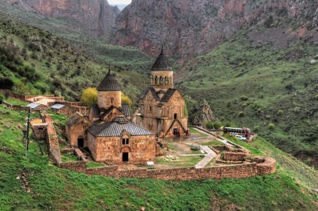
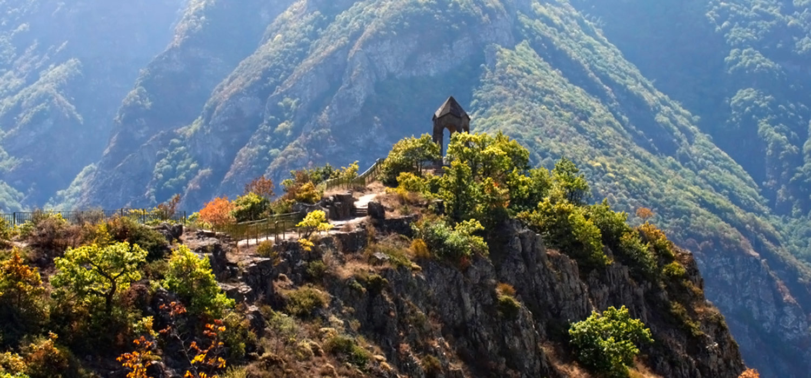
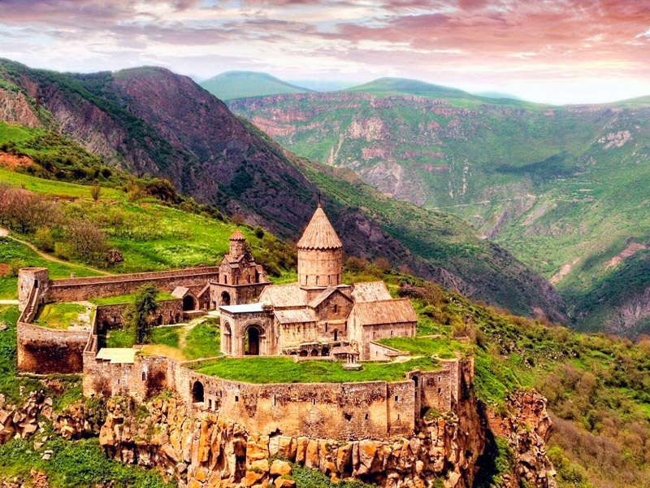

ՔԱՅԼԱՐՇԱՎ ԴԵՊԻ ՍՄԲԱՏԱԲԵՐԴ, ՑԱՂԱՑ ՔԱՐ, ԶՈՐԱՑ ԵԿԵՂԵՑԻ
Սկիզբ : 08:00
Ավարտ : 22:00
Ամեն : շաբաթ | կիրակի
Գինը՝
6.500AMD
7.500AMD
ՆԿԱՐԱԳԻՐ
— Սմբատաբերդը Վայոց ձորի և Սյունիքի հին և խոշոր ամրոցներից է: Պահպանվել են պատմական տեղեկություններ Vդ.-ում ամրոցի մոտ հայերի և պարսիկների միջև տեղի ունեցած արյունահեղ ճակատամարտի (Ավարայրի ճակատամարտ) մասին: Հավանական է, որ այն գոյություն է ունեցել անգամ 5-րդ դարից էլ շուտ։ Սյունյաց գահերեց իշխանների շառավիղներից Վասակյանները հավանաբար Սմբատաբերդը դարձրել են իրենց ռազմական հենակետը։ Իսկ Օրբելյանների տիրապետության ժամանակ Սմբատաբերդը ավելի է ամրացվել։
— Քայլարշավից հետո կայցելենք նաև Ցաղաց Քար (Ցախացքարի վանք). այս միջնադարյան վանքային համալիրը գտնվում է Վայոց Ձորի մարզի Եղեգիս գյուղից 6կմ հյուսիս, բարձրադիր սարավանդի վրա:
— Այս գեղեցիկ տուրը կեզրափակենք այցելելով Զորաց եկեղեցի (Սուրբ Աստվածածին): Այն գտնվում է բլրի վրա, որի ափերը ողողում են գետի ջրերը: Հիմնադրվել է Օրբելյանների օրոք: Տաճարի շինարարությունն իրականացվել է 1303թ: Շինությունը ունի յուրահատուկ ճարտարապետական կառուցվածք, որ բնորոշ չէ ավանդական հայկական եկեղեցիներին. խորանի դիրքը բարձր: Շնորհիվ նման կառուցվածքի զինվորները կարող էին ձին թամբած մոտենալ զոհասեղանին կռվից առաջ օրհնություն ստանալու համար: Ունենալու ենք նաև կանգառ «Արևի» հյուրատանը, որտեղ մեզ սպասվում է թեյի և քաղցրավենիքի համեղ հյուրասիրություն։
Խնդրում ենք հաշվի առնել, որ այս տուրի շրջանակում սպասվում է մոտ 9 կմ քայլարշավ: Հ․Գ․ Տուրի արժեքի մեջ ներառված չէ հյուրատան մուտքավճարը — 1000 դրամ։
ԳԻՆԸ ՆԵՐԱՌՈՒՄ Է
1․ գիդի ծառայություն
2․ տրանսպորտի ծառայություն



Մեկնարկի վայր - Երևանի Կոմիտասի անվան Պետական Կոնսերվատորիա Հաշվի առնելով, որ տեղերը սահմանափակ են, խնդրում ենք նախօրոք կապվել մեզ հետ և գրանցվել: